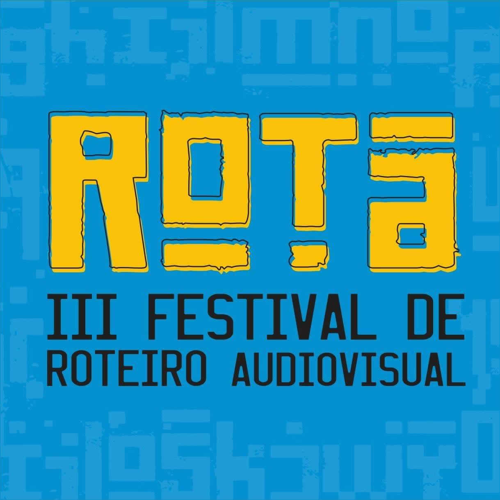

Com a proposta de ser um espaço de debate e encontro entre profissionais e estudantes, o III ROTA - Festival de Roteiro Audiovisual acontecerá na Cinemateca do MAM-RJ entre os dias 02 e 07 de outubro de 2019. Pelo terceiro ano consecutivo, o Festival, focado principalmente nos roteiristas iniciantes, compreende 5 linhas de ação:
O Encontro de Negócios tem o objetivo de promover o encontro dos roteiristas com produtoras, distribuidoras e programadoras de televisão. Roteiristas inscrevem projetos audiovisuais de qualquer formato, gênero e duração e o Festival faz a ponte com as empresas, marcando reuniões de 20 minutos, de acordo com o interesse das empresas nos projetos inscritos. As inscrições ficam abertas de 07 de julho a 15 de setembro de 2019. O Encontro de Negócios acontecerá no dia 07 de outubro de 2019.
O Concurso de Roteiros de Curtas-metragens tem o objetivo de promover, através de premiação, roteiros de curta–metragem de ficção, escritos por estudantes e/ou iniciantes e, com isso, abrir portas para sua realização. As inscrições ficam abertas de 11 de junho a 14 de julho. A Seleção dos Finalistas será divulgada até 21 de setembro. A Cerimônia de Premiação acontecerá no dia 06 de outubro de 2019.
O Laboratório de Projetos de Série é composto por consultorias, que acontecerão nos dias 02 e 03 de outubro, e de Pitching, que acontecerá no dia 06 de outubro. O Lab tem o objetivo de promover, através de premiação, bons projetos de estudantes e iniciantes contribuindo com seu desenvolvimento e apontando caminhos para a sua viabilização. A Curadoria selecionará 10 projetos finalistas para participar do Laboratório. Cada selecionado receberá consultorias de 4 profissionais reconhecidos, e apresentará o Pitching do seu projeto para o Júri Oficial do III ROTA e para o público, que elegerão o Melhor Pitching pelo Júri Oficial e pelo Júri Popular. As inscrições ficam abertas de 22 de junho até 20 de julho. A Seleção dos Finalistas será divulgada em 10 de setembro.
A Mostra Competitiva de Curtas-metragens, que acontecerá nos dias 04 e 05 de outubro, tem o objetivo de promover, através de premiação, roteiristas estudantes e/ou iniciantes por seus curtas–metragens de ficção e documentários, e, com isso, dar visibilidade aos roteiros dos curtas selecionados durante o evento. As inscrições ficam abertas de 01 de julho a 12 de agosto. A Seleção dos Finalistas será divulgada no dia 07 de setembro. Tanto a Mostra quanto a Cerimônia de Premiação, que acontecerá no dia 06 de outubro, terão entrada franca, sujeita à lotação da sala.
O Seminário, que acontecerá nos dias 04, 05 e 06 de outubro, compreenderá palestras, mesas de discussão, um estudo de caso, master classes e uma entrevista especial com um roteirista de destaque no audiovisual. As inscrições estão sujeitas à compra de ingressos e abrem a partir de 28 de junho até esgotarem as vagas.